Mantenimiento
Este documento describe los procedimientos de mantenimiento ordinario y extraordinario de las máquinas Donatoni y proporciona indicaciones para realizar correctamente controles, comprobaciones e intervenciones programadas.
El objetivo es preservar la eficiencia y la fiabilidad de la máquina, prevenir posibles anomalías y reducir el riesgo de paradas imprevistas.
- FRESADORAS ESTÁNDAR
- TABLA COMPARATIVA DE LUBRICANTES
- MN0001 PRUEBA DEL CIRCUITO DE EMERGENCIA
- MN0002 MANTENIMIENTO MENSUAL DE LA BOMBA DE VACÍO
- MN0003 PRUEBA DE FUNCIONAMIENTO DE LA SEÑAL LUMINOSA
- MN0004 ENGRASE DE LAS GUÍAS LINEALES DEL SISTEMA MOVE
- MN0005 ENGRASE DEL RODAMIENTO DE LA TUERCA DEL EJE Z
- MN0006 ENGRASE DE LOS RODAMIENTOS DEL EJE DE TRANSMISIÓN DEL PUENTE DEL EJE Y
- MN0007 CONTROL DEL LUBRICANTE DEL SISTEMA DE ENGRASE AUTOMÁTICO
- MN0008 ENGRASE DE LAS ARTICULACIONES DE LA MESA BASCULANTE
- MN0009 ENGRASE DE LA ARTICULACIÓN DEL BRAZO DE LA CONSOLA
- MN0010 CONTROL DE TUBERÍAS Y RACORDS DEL SISTEMA HIDRÁULICO
- MN0011 CAMBIO DE ACEITE DE LA UNIDAD HIDRÁULICA
- MN0012 LIMPIEZA DE LOS FILTROS DEL CUADRO ELÉCTRICO
- MN0013 MANTENIMIENTO DEL GRUPO DE ENTRADA DE AIRE COMPRIMIDO
- MN0014 RODAMIENTOS DEL ELECTROHUSILLO
- MN0041 ENGRASE DE LAS GUÍAS LINEALES DEL HUSILLO LATERAL TOOL PLUS
- MN0042 LIMPIEZA DEL FILTRO DEL SISTEMA NEUMÁTICO
- MN0043 COMPROBACIÓN DE ESTANQUEIDAD DE LA JUNTA ROTATIVA
- WATERJET
- MN0044 SUSTITUCIÓN DEL ORIFICIO
- MN0045 ENGRASE MANUAL
- MN0039 LIMPIEZA DE LOS FILTROS DE LAS TOMAS DE VENTILACIÓN DEL CUADRO ELÉCTRICO
- MN0015 CONTROL DE TUBERÍAS Y RACORDS DEL SISTEMA DE ALTA PRESIÓN
- MN0030 CONTROL DEL LUBRICANTE DEL SISTEMA DE ENGRASE AUTOMÁTICO
- MN0016 CONTROL DEL ESTADO DE LIMPIEZA DEL DEPÓSITO Y VACIADO
- MN0035 COMPROBAR LA CALIDAD DEL AGUA
- MN0040 MANTENIMIENTO DEL GRUPO DE ENTRADA DE AIRE COMPRIMIDO
- BOMBA BFT
- BOMBA DONATONI HYDROX
- MN0046 Comprobación yo sustitución de los filtros de agua de la bomba Hydrox
- MN0048 Comprobaciones varias en la bomba Hydrox
- MN0049 Sustitución del aceite de la bomba Hydrox
- MN0050 Sustitución del aceite de la bomba Hydrox
- MN0051 Mantenimiento del cuerpo de la bomba de alta presión
- MN0052 Sustitución de las correas de transmisión de la bomba Hydrox
- BOMBA HYPERTHERM
- GRUPO OBTURADOR PARA ALTA PRESIÓN
- MN0029 REPARAR LA VÁLVULA DE PURGA
- MN0017 REPARAR LAS VÁLVULAS DE RETENCIÓN Y LOS OBTURADORES DE BAJA PRESIÓN
- MN0018 REPARAR EL CILINDRO DE ALTA PRESIÓN
- MN0019 SUSTITUIR EL CARTUCHO DEL ELEMENTO DE SELLADO DE ALTA PRESIÓN
- MN0021 SUSTITUIR EL OBTURADOR DE BAJA PRESIÓN
- MN0022 INVERTIR EL CILINDRO DE ALTA PRESIÓN
- MN0023 SUSTITUIR EL CILINDRO DE ALTA PRESIÓN
- MN0024 SUSTITUIR EL CONJUNTO DE LA VÁLVULA DE RETENCIÓN
- MN0025 SUSTITUIR EL CONJUNTO DEL ALOJAMIENTO DEL ELEMENTO DE SELLADO
- MN0026 SUSTITUIR EL ADAPTADOR DE SALIDA
- MN0028 REPARACIÓN DE LA SECCIÓN HIDRÁULICA CENTRAL
- MN0034 SUSTITUIR EL FILTRO DE AGUA
- MN0031 SUSTITUIR EL CUERPO DE LA VÁLVULA DE PURGA
- MN0032 LIMPIAR EL REFRIGERADOR DE AIRE
- MN0036 SUSTITUIR EL ELEMENTO DEL FILTRO HIDRÁULICO
- MN0037 SUSTITUIR EL FLUIDO HIDRÁULICO
- MN0038 LUBRICAR LOS RODAMIENTOS DEL MOTOR PRIMARIO
- MN0020 SUSTITUIR EL CONJUNTO OBTURADOR DE ALTA PRESIÓN
- MN0047 SUSTITUCIÓN DEL TUBO FOCALIZADOR
- MN0053 SUSTITUCIÓN DEL TUBO DE ABRASIVO
- INSTRUCCIONES DE SEGURIDAD
Lista de operaciones de mantenimiento estándar para una fresadora tipo JET625


Antes de continuar, lea atentamente las | |
Intervalo200 horas de trabajo | Complejidad de la operaciónLow01 / 05 |
Personal autorizadoOperador de máquina | EPI previstos:  |
Vídeo
Procedimiento
Con la máquina encendida y preparada para funcionar en modo de acceso a la zona peligrosa, pulse el botón de parada de emergencia y compruebe:
Que en el monitor del panel de control se muestre el estado de “EMERGENCIA ACTIVA
Que se encienda el sector rojo de la señal luminosa situada en el panel de mandos.
Que al accionar cualquier movimiento de uno de los ejes de la máquina mediante las palancas de acción mantenida presentes en el panel de control no se produzca ningún movimiento dentro de la máquina.
Restablezca el funcionamiento de la máquina y compruebe:
Que desaparezca del monitor del panel de control la indicación de “EMERGENCIA ACTIVA”.
Que se apague el sector rojo de la señal luminosa situada en el panel de mandos.
Que al accionar cualquier movimiento de uno de los ejes de la máquina mediante las palancas de acción mantenida presentes en el panel de control se produzca el movimiento correspondiente dentro de la máquina
Antes de continuar, lea atentamente las | |
Intervalocada semana; cada mes | Complejidad de la operaciónLow01 / 05 |
Personal autorizadoOperador de máquina | EPI previstos:  |
Vídeo
Procedimiento
El mantenimiento de la bomba de vacío en buen estado depende del nivel de limpieza del agua del sistema hidráulico. Corresponde al comprador asegurarse de que las características del agua utilizada sean conformes con lo previsto en el manual de uso y mantenimiento del fabricante de la bomba.
Cada semana:
Compruebe que el nivel del agua en el depósito llegue hasta el nivel del tubo de desagüe de “rebose”
En caso de uso esporádico del sistema de vacío, accione semanalmente la bomba de vacío mediante el mando de activación del vacío (consulte la secc. B del manual “Instrucciones de uso” asociado al presente manual)
Cada mes:
Realice una limpieza minuciosa del depósito eliminando los posibles depósitos de sedimentos acumulados en el fondo
Para obtener indicaciones más detalladas sobre el mantenimiento de la bomba de vacío, consulte el manual de uso y mantenimiento
120113044828_Manuale_Vuoto_Italiano.pdf
Antes de continuar, lea atentamente las | |
Intervalo— | Complejidad de la operaciónLow01 / 05 |
Personal autorizadoOperador de máquina | EPI previstos:  |
Imágenes

Procedimiento
Prueba de la sección naranja de la señal luminosa:
Prepare la máquina para funcionar en modo de acceso a la zona peligrosa tal como se describe en el capítulo - MODO DE ACCESO A LA ZONA PELIGROSA y compruebe que el sector naranja de la señal luminosa se encienda de forma intermitente.
Prepare la máquina para funcionar en “modo lento” (consulte la secc. B del manual “Instrucciones de uso” asociado al presente manual) y compruebe que el sector naranja de la señal luminosa se encienda de forma fija.
Prueba de la sección verde de la señal luminosa:
Prepare la máquina para funcionar en modo de trabajo tal como se describe en el capítulo - MODO DE TRABAJO, realice cualquier movimiento de uno de los ejes de la máquina mediante las palancas de acción mantenida presentes en el panel de control (consulte la secc. B del manual “Instrucciones de uso” asociado al presente manual) y compruebe que el sector verde de la señal luminosa se encienda de forma intermitente durante el movimiento
Prueba de la sección roja de la señal luminosa:
Pulse el botón de parada de emergencia situado en el panel de control y compruebe que el sector rojo de la señal luminosa se encienda de forma intermitente.
NOTA: para restablecer el funcionamiento de la máquina, proceda como se describe en el manual
Antes de continuar, lea atentamente las | |
IntervaloCada 300 horas de trabajo | Complejidad de la operaciónLow01 / 05 |
Personal autorizadoOperador de máquina | EPI previstos:  |
Vídeo
Imágenes

Procedimiento
Al menos cada 300 horas de trabajo, engrase mediante la pistola correspondiente las guías lineales del sistema MOVE con 1cm3 de grasa a través de los engrasadores indicados en la figura

Antes de continuar, lea atentamente las | |
Intervalocada 300 horas de trabajo | Complejidad de la operaciónLow01 / 05 |
Personal autorizadoOperador de máquina | EPI previstos:  |
Imágenes

Procedimiento
Al menos cada 300 horas de trabajo, engrase mediante la pistola correspondiente el rodamiento de la tuerca del eje Z con 1 cm3 de grasa a través del engrasador indicado en la figura
El engrasador se encuentra en la parte lateral derecha del manguito, debajo del cárter mostrado en la figura, y está situado tal como se indica y resalta en la imagen.


Antes de continuar, lea atentamente las | |
Intervalocada 300 horas de trabajo | Complejidad de la operaciónLow01 / 05 |
Personal autorizadoOperador de máquina | EPI previstos:  |
Vídeo
Imagen

Procedimiento
Al menos cada 300 horas de trabajo, engrase mediante la pistola correspondiente los rodamientos del eje de transmisión del eje Y con 1 cm3 de grasa a través de los engrasadores indicados en la figura

Antes de continuar, lea atentamente las | |
Intervalocada 300 horas de trabajo | Complejidad de la operaciónLow01 / 05 |
Personal autorizadoOperador de máquina | EPI previstos:  |
Imágenes

Procedimiento
El sistema de engrase automático está compuesto por una unidad automática que engrasa los elementos conectados según los intervalos programados.

El depósito debe rellenarse con la grasa necesaria sin superar el nivel máximo indicado.
Al menos cada 500 horas de trabajo, compruebe el nivel de grasa en el depósito y, cuando sea necesario, rellénelo utilizando el tipo de grasa correcto
N.B. Una alarma en pantalla avisa al operador cuando el nivel de grasa ha alcanzado el nivel mínimo en el depósito y, por tanto, es necesario rellenarlo.
Manual específico del dispositivo
Antes de continuar, lea atentamente las | |
Intervalocada 6 meses | Complejidad de la operaciónLow01 / 05 |
Personal autorizadoOperador de máquina | EPI previstos:  |
Vídeo
Imágenes
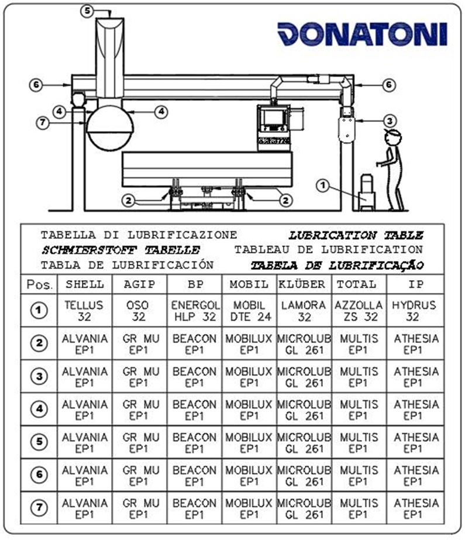
Procedimiento
Al menos cada 6 meses, engrase mediante la pistola correspondiente las articulaciones de la mesa basculante con 1cm3 de grasa a través de los engrasadores indicados en la figura.

Antes de continuar, lea atentamente las | |
Intervalo— | Complejidad de la operaciónLow01 / 05 |
Personal autorizadoOperador de máquina | EPI previstos:  |
Antes de continuar, lea atentamente las | |
Intervalocada año = 8760 h | Complejidad de la operaciónLow01 / 05 |
Personal autorizadoOperador de máquina | EPI previstos:  |
Antes de continuar, lea atentamente las | |
Intervalocada 2000 horas de trabajo | Complejidad de la operaciónLow01 / 05 |
Personal autorizadoOperador de máquina | EPI previstos:  |
Vídeo
Procedimiento
Normalmente, el cambio de aceite debe realizarse al menos cada 2000 horas de trabajo; la sustitución debe ir acompañada de una limpieza minuciosa del depósito.
El vaciado se realiza a través del tapón inferior (pos. B en la figura) y el llenado del depósito debe efectuarse a través de un filtro con malla de 10 micras, mediante el tapón de llenado (pos. A en la figura)
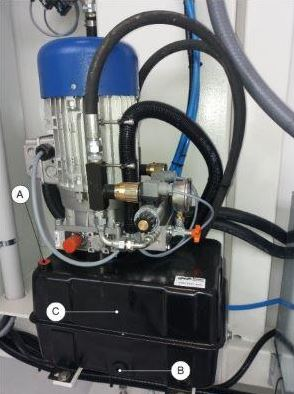
Antes de continuar, lea atentamente las | |
Intervalocada 2000 horas de trabajo | Complejidad de la operaciónLow01 / 05 |
Personal autorizadoOperador de máquina | EPI previstos:  |
Procedimiento
Operaciones
Gire el interruptor A a la posición OFF | 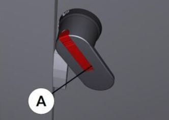 |
Abra las puertas D y E |  |
Retire la protección F y el filtro G |  |
Limpie el filtro utilizando un chorro de aire comprimido H |  |
Restablezca el conjunto realizando el procedimiento en orden inverso |
Antes de continuar, lea atentamente las | |
Intervalo— | Complejidad de la operaciónLow01 / 05 |
Personal autorizadoOperador de máquina | EPI previstos:  |
Antes de continuar, lea atentamente las | |
Intervalocada 1550 horas de trabajo | Complejidad de la operaciónLow01 / 05 |
Personal autorizadoOperador de máquina | EPI previstos:  |
Antes de continuar, lea atentamente las | |
Intervalocada 300 horas de trabajo | Complejidad de la operaciónLow01 / 05 |
Personal autorizadoOperador de máquina | EPI previstos:  |
Vídeo
Procedimiento
Al menos cada 300 horas de trabajo, engrase mediante la pistola correspondiente las guías lineales del sistema MOVE con 1cm3 de grasa a través de los engrasadores indicados en la figura

Antes de continuar, lea atentamente las | |
Intervalocada 2000 horas de trabajo | Complejidad de la operaciónLow01 / 05 |
Personal autorizadoOperador de máquina | EPI previstos:  |
Vídeo
Instrucciones de seguridad específicas para el mantenimiento
Para limpiar el filtro, antes de intervenir, despresurice el sistema mediante la válvula de corte del grupo de aire y bloquéela con un candado.
(Consulte el manual del fabricante
Procedimiento
Para las indicaciones relativas al mantenimiento del grupo de entrada de aire comprimido, consulte el manual de uso y mantenimiento del fabricante.
Antes de realizar operaciones de mantenimiento, cierre la válvula de corte y coloque un candado.

Antes de continuar, lea atentamente las | |
Intervalocada 500 horas de trabajo | Complejidad de la operaciónLow01 / 05 |
Personal autorizadoOperador de máquina | EPI previstos:  |
Procedimiento
Compruebe que no haya signos externos de fugas de líquido refrigerante. En caso de fugas, sustituya el componente por el repuesto específico.
Sustitución
En caso de sustitución, proceda como se describe a continuación
Desenrosque el tapón |  |
|---|---|
Introduzca en el orificio central una llave Allen de 6mm. | 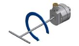 |
Vuelva a enroscar el tapón trasero. |  |
Espacio para las operaciones de mantenimiento accesible desde la máquina para máquinas de tipo Waterjet.

Antes de continuar, lea atentamente las | |
Intervalocada 70 horas de trabajo | Complejidad de la operaciónLow01 / 05 |
Personal autorizadoOperador de máquina | EPI previstos:  |
Afloje (NO DESCONECTE) el racord del tubo de alta presión

Manteniendo fijo el cuerpo de la válvula, desenrosque la tuerca anular inferior

Desenganche y desplace la válvula

Desenrosque el cuerpo de unión para poder acceder al alojamiento del orificio

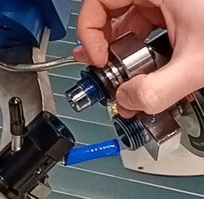

Con ayuda de un tubo pequeño, unos alicates u otra herramienta, retire el orificio desgastado
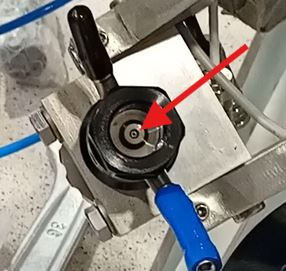
Introduzca el nuevo orificio en el alojamiento comprobando la orientación correcta (parte cónica hacia arriba)

Limpie los distintos racords y aplique después el lubricante antigripante (Blue Goop) antes de fijarlos

Proceda con la secuencia inversa para el montaje, respetando los pares de apriete

Documentos adjuntos
Video
Antes de continuar, lea atentamente las | |
Intervalocada 300 horas de trabajo | Complejidad de la operaciónLow01 / 05 |
Personal autorizadoOperador de máquina | EPI previstos:  |
Mediante la pistola correspondiente, engrase los distintos puntos indicados a continuación con 1cm3 de grasa EP1:
Guías lineales del husillo lateral TOOL_

Guías lineales del palpador de la chapa

Paso del reductor del eje A

Tabla comparativa de lubricantes

Antes de continuar, lea atentamente las | |
Intervalocada 2000 horas de trabajo | Complejidad de la operaciónLow01 / 05 |
Personal autorizadoOperador de máquina | EPI previstos:  |
Apague correctamente la máquina y gire el interruptor a la posición OFF

Retire la rejilla soltándola por la parte inferior y desplazándola hacia arriba


Limpie el filtro utilizando una pistola de aire

Vuelva a montar todo siguiendo el procedimiento inverso
Antes de continuar, lea atentamente las | |
Intervalocada 1000 horas de trabajo | Complejidad de la operaciónLow01 / 05 |
Personal autorizadoOperador de máquina | EPI previstos:  |
Procedimiento
Coloque la máquina en el centro del depósito. Encienda la bomba y compruebe si hay fugas a lo largo de las tuberías de alta presión.
Si hay fugas, apague la bomba, pulse la seta de emergencia y elimine la fuga apretando el racord con el par de apriete correcto.
35 Nm para los racords de 1/4” de pulgada
70 Nm para los racords de 3/8” de pulgada
A continuación, desactive la emergencia, habilite los mandos e intente volver a encender la bomba para comprobar si existen otras fugas.
En el enlace siguiente está disponible el esquema de los tubos HP.
Antes de continuar, lea atentamente las | |
Intervalocada 450 horas de trabajo | Complejidad de la operaciónLow01 / 05 |
Personal autorizadoOperador de máquina | EPI previstos:  |
Procedimiento
El sistema de engrase automático está compuesto por una unidad automática que engrasa los elementos conectados según los intervalos programados
El depósito debe rellenarse con la grasa necesaria sin superar el nivel máximo indicado. El rellenado debe realizarse a través de la conexión correspondiente (A en la figura)

Antes de continuar, lea atentamente las | |
Intervalorelacionado con el consumo de abrasivo | Complejidad de la operaciónLow01 / 05 |
Personal autorizadoOperador de máquina | EPI previstos:  |
Procedimiento
Compruebe que el puente y los demás elementos de la máquina no entren en contacto con las partes que deben desplazarse
Abra la válvula de desagüe para vaciar el depósito
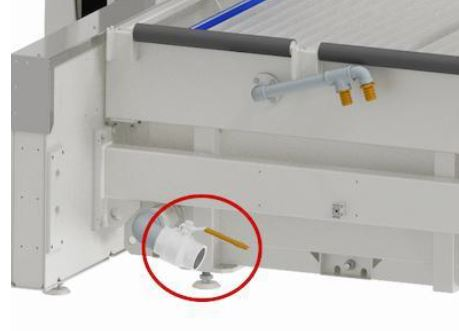
Eleve el bastidor de cuchillas utilizando los soportes correspondientes (Peso del bastidor = 750Kg)

Retire las rejillas de recuperación de piezas
(OPCIONAL) Eleve los depósitos de recogida de abrasivo y vacíelos. A continuación, límpielos y compruebe su integridad

Limpie bien el depósito eliminando los residuos de abrasivo
Vuelva a colocar los depósitos de recogida de abrasivo, las rejillas y la mesa de cuchillas
Antes de continuar, lea atentamente las | |
Intervalocada 1000 horas de trabajo | Complejidad de la operaciónLow01 / 05 |
Personal autorizadoOperador de máquina | EPI previstos:  |
Antes de continuar, lea atentamente las | |
Intervalocada 400 horas de trabajo | Complejidad de la operaciónLow01 / 05 |
Personal autorizadoOperador de máquina | EPI previstos:  |
Antes de continuar, lea atentamente las | |
Intervalo— | Complejidad de la operaciónLow01 / 05 |
Personal autorizadoOperador de máquina | EPI previstos:  |
Antes de continuar, lea atentamente las | |
Intervalo— | Complejidad de la operaciónLow01 / 05 |
Personal autorizadoOperador de máquina | EPI previstos:  |
Antes de continuar, lea atentamente las | |
Intervalocada 150 horas de trabajo | Complejidad de la operaciónLow01 / 05 |
Personal autorizadoOperador de máquina | EPI previstos:  |

Posición | Descripción | Grado de filtración |
|---|---|---|
A | Filtro de agua con cartucho de 9/10" | 5 μm |
B | Filtro de agua con cartucho de 9/10" | 1 μm |
Comprobación: ¿cuándo deben sustituirse?
Es necesario sustituir los cartuchos filtrantes cuando la pérdida de carga del sistema sea superior a 1 bar (cuando la diferencia de presión entre el punto de entrada X y el de salida Y sea: X-Y > 1 bar)
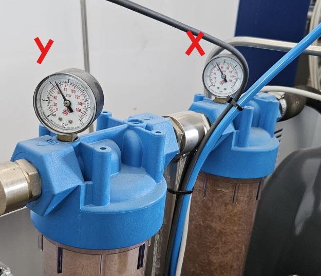
Procedimiento de sustitución

Retire el cartucho filtrante usado;
Limpie el recipiente del filtro (eliminando posibles residuos o restos);
Introduzca el nuevo cartucho filtrante (asegúrese de instalar en cada posición el cartucho con el grado de filtración correcto);
Coloque el recipiente del filtro en su alojamiento y apriételo utilizando la llave;
Antes de continuar, lea atentamente las | |
Intervalomensual | Complejidad de la operaciónLow01 / 05 |
Personal autorizadoOperador de máquina | EPI previstos:  |
Comprobación del nivel de aceite del motor de la bomba
Retire la varilla y compruebe el nivel.
Compruebe también que no haya agua de corte en el lubricante “Emulsión”

Comprobación del recipiente de agua sucia
Si se detecta una cantidad excesiva de fluido o emulsión en el recipiente, póngase en contacto con la asistencia técnica de Donatoni Service srl para recibir instrucciones o programar una comprobación del sistema de estanqueidad de la bomba de pistones
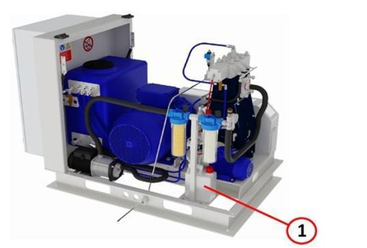
Espacio intermedio de la bomba de alta presión (inspección visual)
Compruebe que los fuelles no estén dañados. En caso de daños, póngase en contacto con la asistencia
En caso de daños en el fuelle, compruebe también si existe corrosión en el vástago del
pistón.Compruebe si hay fluido de servicio en el espacio intermedio; en tal
caso póngase en contacto con la asistencia
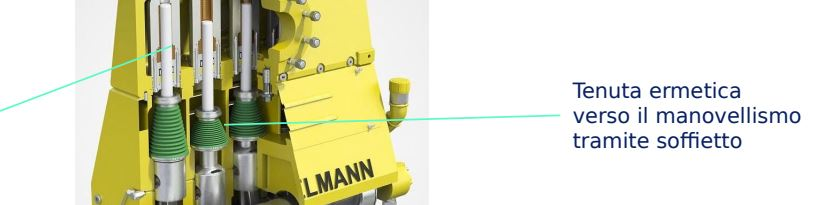
Antes de continuar, lea atentamente las | |
Intervalo1 año o 4 años a partir de la segunda vez | Complejidad de la operaciónMedium03 / 05 |
Personal autorizadoOperador de máquina | EPI previstos:  |
Para acceder al tapón de la válvula de vaciado y a la boca de llenado, abra la cubierta (A) y retire el cárter frontal (C) y lateral (B).
Para recoger el aceite se necesita un recipiente adecuado con una capacidad superior a 5litros.
Coloque un paño o similar debajo del tapón de vaciado de aceite (E).

Retire el tapón (D) de la boca de llenado de aceite.
Para vaciar el aceite, utilice el tubo flexible con el racor roscado específico suministrado. Asegúrese de que el extremo abierto permanezca dentro del recipiente preparado para la recogida
Desenrosque el tapón de la válvula de vaciado de aceite (E). El aceite comienza a salir en cuanto se enrosca la conexión roscada del tubo flexible.
Compruebe si hay emulsión en el aceite usado. Si hay emulsión, elimine la humedad del circuito de aceite.
Retire el tubo flexible y enrosque el tapón de la válvula de vaciado de aceite (E).
Llene el cárter con aproximadamente 4.3 litros de aceite nuevo, comprobando el nivel mediante la varilla.
Clase de viscosidad del aceite: PAO ISO VG 320.
Al final del documento hay una tabla comparativa.
 |  |

Antes de continuar, lea atentamente las | |
Intervalo1 año o 4 años a partir de la segunda vez | Complejidad de la operaciónMedium03 / 05 |
Personal autorizadoOperador de máquina | EPI previstos:  |
Véase la página
MN0049 Sustitución del aceite de la bomba Hydrox
Antes de continuar, lea atentamente las | |
Intervalocada 1500 horas de funcionamiento | Complejidad de la operaciónCritical05 / 05 |
Personal autorizadoService Donatoni | EPI previstos:  |
Algunas partes de la bomba están sujetas a desgaste; su mantenimiento debe ser realizado por personal debidamente formado.
Las operaciones de mantenimiento deben realizarse en la cabeza de la bomba y en el conjunto pistón/cilindro. En función de las horas de funcionamiento, hay distintos componentes que deben sustituirse.
Póngase en contacto con la asistencia Donatoni para el mantenimiento


Antes de continuar, lea atentamente las | |
Intervalocada 6000 horas de funcionamiento | Complejidad de la operaciónCritical05 / 05 |
Personal autorizadoService Donatoni | EPI previstos:  |
El tensado de las correas debe realizarse conforme a especificaciones precisas. Póngase en contacto con la asistencia Donatoni para el mantenimiento
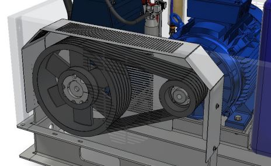
Antes de continuar, lea atentamente las | |
Intervalo— | Complejidad de la operaciónLow01 / 05 |
Personal autorizadoOperador de máquina | EPI previstos:  |
Imágenes
Antes de continuar, lea atentamente las | |
Intervalocada 2000 horas de trabajo | Complejidad de la operaciónLow01 / 05 |
Personal autorizadoOperador de máquina | EPI previstos:  |
Imágenes
Antes de continuar, lea atentamente las | |
Intervalocada 1000 horas de trabajo | Complejidad de la operaciónLow01 / 05 |
Personal autorizadoOperador de máquina | EPI previstos:  |
Imágenes


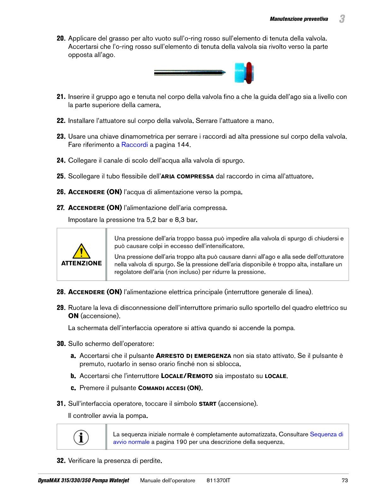
Antes de continuar, lea atentamente las | |
Intervalocada 500 horas de trabajo | Complejidad de la operaciónLow01 / 05 |
Personal autorizadoOperador de máquina | EPI previstos:  |
Antes de continuar, lea atentamente las | |
Intervalocada 500 horas de trabajo | Complejidad de la operaciónLow01 / 05 |
Personal autorizadoOperador de máquina | EPI previstos:  |
Antes de continuar, lea atentamente las | |
Intervalocada 500 horas de trabajo | Complejidad de la operaciónLow01 / 05 |
Personal autorizadoOperador de máquina | EPI previstos:  |
Antes de continuar, lea atentamente las | |
Intervalocada 1000 horas de trabajo | Complejidad de la operaciónLow01 / 05 |
Personal autorizadoOperador de máquina | EPI previstos:  |
Antes de continuar, lea atentamente las | |
Intervalocada 1500 horas de trabajo | Complejidad de la operaciónLow01 / 05 |
Personal autorizadoOperador de máquina | EPI previstos:  |
Antes de continuar, lea atentamente las | |
Intervalocada 3000 horas de trabajo | Complejidad de la operaciónLow01 / 05 |
Personal autorizadoOperador de máquina | EPI previstos:  |
Antes de continuar, lea atentamente las | |
Intervalocada 3000 horas de trabajo | Complejidad de la operaciónLow01 / 05 |
Personal autorizadoOperador de máquina | EPI previstos:  |
Antes de continuar, lea atentamente las | |
Intervalocada 6000 horas de trabajo | Complejidad de la operaciónLow01 / 05 |
Personal autorizadoOperador de máquina | EPI previstos:  |
Antes de continuar, lea atentamente las | |
Intervalocada 6000 horas de trabajo | Complejidad de la operaciónLow01 / 05 |
Personal autorizadoOperador de máquina | EPI previstos:  |
Antes de continuar, lea atentamente las | |
Intervalocada 12000 horas de trabajo | Complejidad de la operaciónLow01 / 05 |
Personal autorizadoOperador de máquina | EPI previstos:  |
Antes de continuar, lea atentamente las | |
Intervalocada 1000 horas de trabajo | Complejidad de la operaciónLow01 / 05 |
Personal autorizadoOperador de máquina | EPI previstos:  |
Antes de continuar, lea atentamente las | |
Intervalocada 3000 horas de trabajo | Complejidad de la operaciónLow01 / 05 |
Personal autorizadoOperador de máquina | EPI previstos:  |
Antes de continuar, lea atentamente las | |
Intervalocada 1000 horas de trabajo | Complejidad de la operaciónLow01 / 05 |
Personal autorizadoOperador de máquina | EPI previstos:  |
Antes de continuar, lea atentamente las | |
Intervalocada 1500 horas de trabajo | Complejidad de la operaciónLow01 / 05 |
Personal autorizadoOperador de máquina | EPI previstos:  |
Antes de continuar, lea atentamente las | |
Intervalocada 3000 horas de trabajo | Complejidad de la operaciónLow01 / 05 |
Personal autorizadoOperador de máquina | EPI previstos:  |
Antes de continuar, lea atentamente las | |
Intervalocada 3000 horas de trabajo | Complejidad de la operaciónLow01 / 05 |
Personal autorizadoOperador de máquina | EPI previstos:  |
Antes de continuar, lea atentamente las | |
Intervalocada 1000 horas de trabajo | Complejidad de la operaciónLow01 / 05 |
Personal autorizadoOperador de máquina | EPI previstos:  |
Antes de continuar, lea atentamente las | |
Intervalocada 100 horas de trabajo | Complejidad de la operaciónLow01 / 05 |
Personal autorizadoOperador de máquina | EPI previstos:  |
Retire el palpador para facilitar el desmontaje

Gire la tuerca anular para retirar el tubo focalizador.

Sustituya el tubo focalizador por un elemento nuevo, recuperando el separador
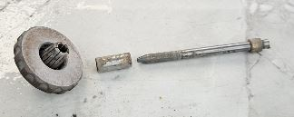
Vuelva a montar y enrosque de nuevo la tuerca anular después de introducir la pieza nueva

Vuelva a montar el palpador de la chapa
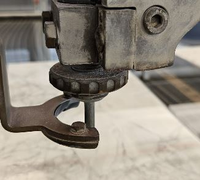
Realice el palpado de la boquilla para configurar el valor correcto de “Delta Z”
Vídeo
Antes de continuar, lea atentamente las | |
Intervalocada 1000 horas de trabajo | Complejidad de la operaciónMedium03 / 05 |
Personal autorizadoOperador de máquina | EPI previstos:  |
Gire el eje A a 90_ para poder acceder al cierre de la cabeza
Retire el cárter

Retire el cárter de protección situado debajo de la cabeza
Retire la abrazadera del tubo
Extraiga el tubo por la parte inferior memorizando su recorrido; el tubo nuevo deberá pasarse después siguiendo el mismo recorrido
Introduzca el nuevo tubo de abrasivo
Fije el tubo con el enganche correspondiente
Cierre de nuevo los cárteres prestando atención a los cables situados debajo de la cabeza
Vídeo
Antes de iniciar cualquier operación de instalación, configuración o mantenimiento, lea atentamente TODOS los manuales de instrucciones, documentos y guías suministrados con la máquina.
La persona que realiza la operación es la única responsable del correcto funcionamiento y mantenimiento de la máquina.
Donatoni Macchine declina expresamente toda responsabilidad por posibles accidentes (incluida la muerte) o daños en el equipo u otros bienes derivados de un uso o mantenimiento inadecuados de la máquina, así como del incumplimiento de los procedimientos establecidos en el manual de instrucciones del equipo o en cualquier otro material y procedimiento de seguridad. Si encuentra problemas o dificultades, le recomendamos encarecidamente que se ponga en contacto con Donatoni Macchine o con su centro de asistencia de referencia.
La seguridad es una prioridad. Si tiene alguna pregunta, no dude en ponerse en contacto con la asistencia Donatoni a través de los siguientes datos de contacto:
T: _39 045 6862899
WhatsApp: _39 045 7740052
Telegram: @donatonimacchine_bot